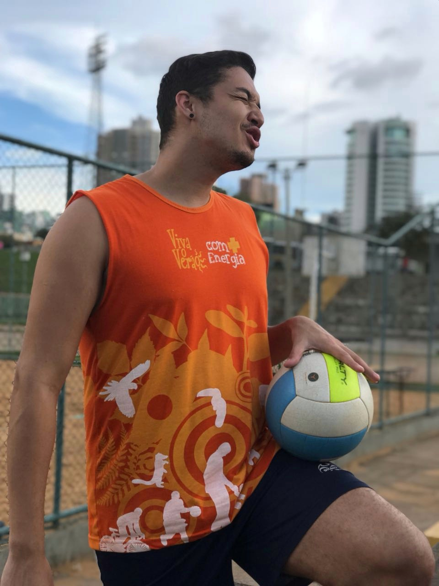
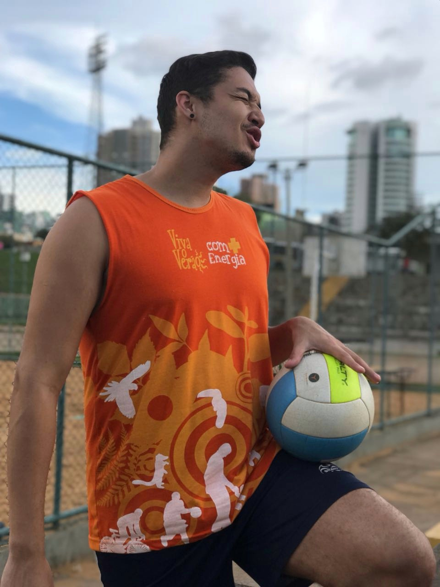

Projeto fictício: Sistema de Agenda
Desenvolvimento de uma agenda online para gerenciar compromissos, simulando aplicação prática de HTML e CSS.
"Transformando curiosidade em carreira na tecnologia."
Estou iniciando minha jornada na área da tecnologia, algo que sempre me despertou curiosidade e vontade de aprender. Tenho uma longa trajetória na área comercial, onde desenvolvi foco, atenção aos detalhes e a habilidade de lidar com adversidades para alcançar objetivos.
Desenvolvimento de uma agenda online para gerenciar compromissos, simulando aplicação prática de HTML e CSS.
Criação de um blog com layout responsivo para compartilhar experiências e aprendizados na tecnologia.
Sou formado em Processos Gerenciais e Técnico em Radiologia. Vivi em Portugal por quase dois anos e tive a oportunidade de atuar em uma empresa espanhola, expandindo meu conhecimento cultural e profissional. Adoro esportes, principalmente vôlei, e já participei de diversos campeonatos.
 
